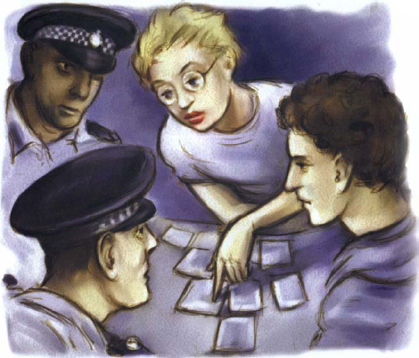
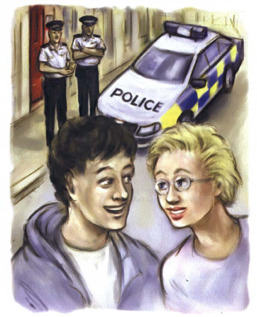

Hai cảnh sát đã đến. Amy kể lại sự việc của mình cho các cảnh sát.
Cô nói: 'Người đàn ông to cao đó tên là Wallace'. 'Anh ta là quản giáo - anh ta làm việc trong nhà tù ở thành phố này. Anh ta sống trong căn hộ này. Tôi sống ở một căn hộ khác trong tòa nhà này.'
Amy nói: 'Hôm thứ ba, tôi thấy Wallace nói chuyện với một người đàn ông trong nhà thờ'. 'Tôi biết người đàn ông kia. Tôi nhớ ra bức ảnh của ông ta trên tờ Tin tức Thành phố. Ông ta là luật sư. Tên ông ta là Thurber.'

Một cảnh sát nói: 'Chúng tôi biết về ông Thurber'. 'Ông ấy là luật sư của Donald Zetter. Zetter đang ngồi tù ở đây, ngay trong thành phố này.'
Amy nói: 'Và Wallace thì làm việc trong nhà tù đó'. 'Tôi nghe được Wallace nói chuyện với Thurber. Anh ta nói, "Mang tiền đến đây lúc chín giờ sáng thứ sáu. Sau đó, tôi sẽ giúp Zetter". Tôi rất lo lắng về những lời đó. Có điều gì đó chẳng lành - tôi biết điều đó!'
Pete hỏi: 'Bạn đã làm gì?'
Amy đáp: 'Sáng nay, tôi mang máy ảnh đến nhà thờ lúc chín giờ'. 'Tôi đã chụp một bức ảnh của hai người đàn ông đó. Nhưng Wallace đã nhìn thấy tôi dùng máy ảnh.'
Pete hỏi: 'Chuyện gì xảy ra sau đó?'
Amy đáp: 'Tôi đã bỏ chạy, nhưng Wallace đuổi theo tôi'. 'Tôi đã chạy đến trung tâm thương mại. Tôi lấy phim ra khỏi máy ảnh. Tôi muốn mang nó đến cửa hàng bách hóa. Nhưng tôi nhìn thấy Wallace đang đến gần mình. Tôi bắt đầu chạy lại. Sau đó, tôi thấy cậu trong trung tâm thương mại.'
Pete nói: 'Và bạn đã đưa bộ phim cho tôi.'
Pete kể câu chuyện của mình cho các cảnh sát nghe. Sau đó, anh ấy hỏi Amy một câu.
Anh ấy hỏi: 'Wallace tìm thấy bạn khi nào?'
Amy đáp: 'Anh ta đã đợi tôi bên ngoài căn hộ'. 'Anh ta kéo tôi lên cầu thang. Anh ta kéo tôi vào căn hộ này. Và sau đó, tôi đã nói với anh ta về cậu và về bộ phim.'
Amy nhìn Pete.
Cô ấy nói nhỏ: 'Tôi đã không muốn nói với anh ta về cậu, nhưng anh ta đã đánh tôi'. 'Sau đó, anh ta nhốt tôi vào phòng tắm và đợi cậu.
Amy nói: 'Tôi rất lo lắng'. 'Wallace nói với tôi, "Chàng trai trẻ kia rất thông minh. Nó sẽ tìm thấy cô. Nó sẽ giải quyết được câu đố và sẽ mang những bức ảnh đến đây". Tôi rất lo lắng cho cậu.'
Các cảnh sát bắt đầu tìm chiếc phong bì màu nâu. Họ tìm thấy nó ở dưới giường của Wallace. Có 50.000 bảng Anh bên trong phong bì.
Các cảnh sát, Amy và Pete rời khỏi ngôi nhà.
Pete hỏi một cảnh sát: 'Zetter có muốn trốn khỏi nhà tù không?' 'Ông ta có muốn Wallace giúp không? 50.000 bảng Anh đó có phải là để trả cho sự giúp đỡ của Wallace không?'
Cảnh sát đó nói: 'Đúng vậy'. 'Chúng tôi sẽ nói chuyện với Wallace. Sau này, chúng tôi sẽ đến thăm anh ta ở bệnh viện. Lúc này, anh ta sẽ nói thật với chúng tôi - tôi chắc chắn điều đó! Sau đó, chúng tôi sẽ nói chuyện với Ronald Thurber.'
Cảnh sát đó nhìn Pete và Amy.
Ông ta nói: 'Cảm ơn hai bạn'. 'Hai bạn là những thanh niên thông minh.
Hai bạn có phải bạn bè không?'
Pete nhìn Amy. Amy nhìn Pete.
Họ cùng nói: 'Chúng tôi đã là bạn bè rồi!' Mọi người đều cười ầm lên! Sau đó, Pete và Amy cùng nhau rời đi.
